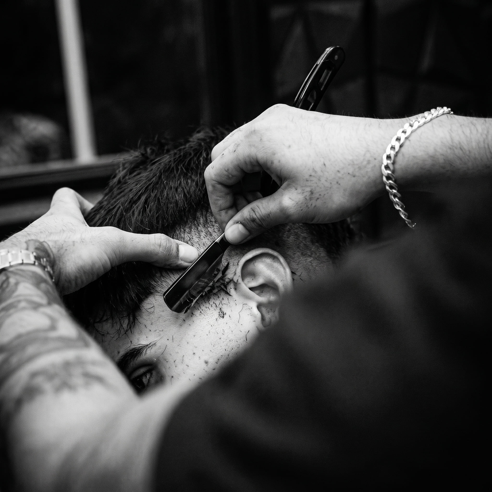

Tornando homens mais atraentes, confiantes e felizes.

“Melhor corte que já fiz. Atendimento impecável e o acabamento na navalha é outro nível. Saí me sentindo outro homem.”
“Ambiente top, barbeiros pontuais e muito atenciosos. A barba com toalha quente virou meu momento de relaxar na semana.”
“Precisão em cada detalhe, exatamente como prometem. Indiquei para os amigos e todos voltaram.”
Rua Pinheiro do Parana, 58062-305Paratibe · João Pessoa, PB